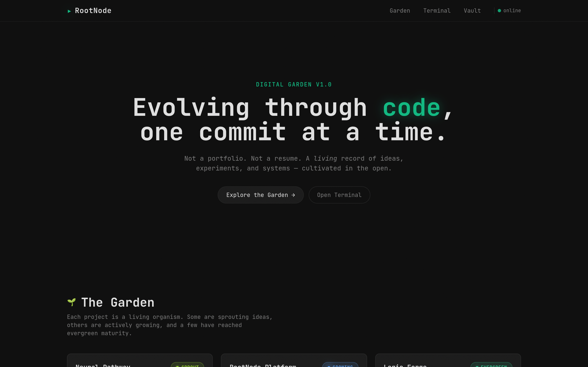

Portofolio Karya
Beberapa website yang pernah saya bangun menggunakan HTML, CSS, JS vanilla.

Ruang.Trading × ASSO.dev
Landing page spesialis frontend, navigasi multi-halaman, desain terminal dark.
Live Demo
OSIS SMA NU by ASSO
Website organisasi dengan transisi halaman penuh (full‑page) dan animasi halus.
Live Demo
ASSO.dev — Official Tech Site
Etalase jasa tech fixing (OS, Android, MQL5) dengan identitas terminal khas.
Live Demo
RootNode — Digital Garden
Platform portofolio hidup berbasis HTML/CSS/JS vanilla. Terminal interaktif, knowledge graph, dan project registry dengan status Sprout / Growing / Evergreen.
Live Demo